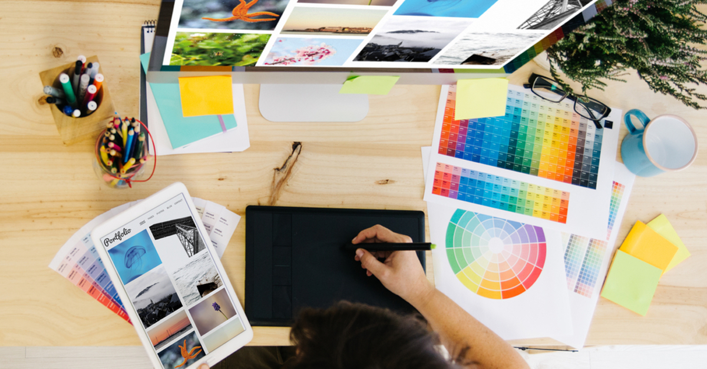

My Portfolio


Full Stack Web Developer
Myself Prashanth Kumar Dubey.My Native place is Ranchi,Jharkhand. I am 22 Year Old.I had completed my B.tech in stream of Computer Science from Gandhi Engineering college ,Bhubaneswar in 2018.I had Scored 7.5sgpa aggregate upto 8th sem.I have an Three year Experience as a Content Manager.I had worked Three years in LectureNotes. We are Three in family ,My Father is a goverment employee and My mother is a housewife. My Hobbies are painting,playing Cricket,listening song,reading book and Browsing net.My Aim is to Design more responsive and Dynamic Webpages with better functionality.
I had Learnt Full Stack Web Developemnet From Amicitech Solution as well as Newton School. I had practiced it in Amicitech solution Pvt. Ltd. for 3 month as a Php Developer. In period of 6th months we was building many dynamic and responsive webpages and worked back-end also as a php developer.Our job resopnsibility in back-end is create dashboard, apply CRUD operations, etc.
I had Completed My B.Tech from Gandhi Engineering College Bhubaneswar. I had joined Gandhi Engineering College in 2014 and passed passout in 2018. I had got aggregate 7.5 sgpa upto 8th semester during Engineeering. in my College lots of good and experienced faculties and staffs are there. Lots of memories are there to this College.
I had Completed My 11th and 12th from Krishna Sudarshan Central School Bokaro Thermal Power Station. I had joined Krishna Sudarshan in 2012 and passed passout in 2014. I had got aggregate 59% in 12th class and this is my last School after that college life was start . in my School lots of good and experienced faculties and staffs are there. Lots of memories are there to this School.
I had Completed My 9th and 10th class from Kendriya Vidayala Dvc Bokaro Thermal power station . I had joined Kendriya Vidayala DVC in 2010 and passed passout in 2012. I had got aggregate 7 cgpa in 10th class and after that i was joined KSCS for higher Education. in my School lots of good and experienced faculties and staffs are there. Lots of memories are there to this School.